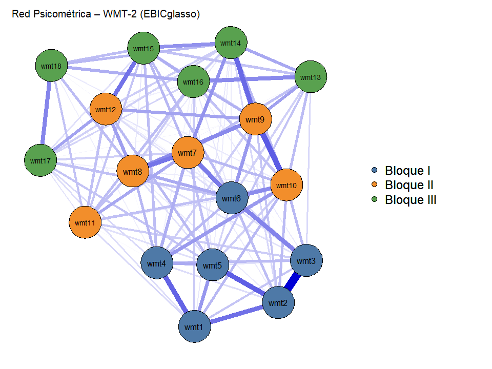
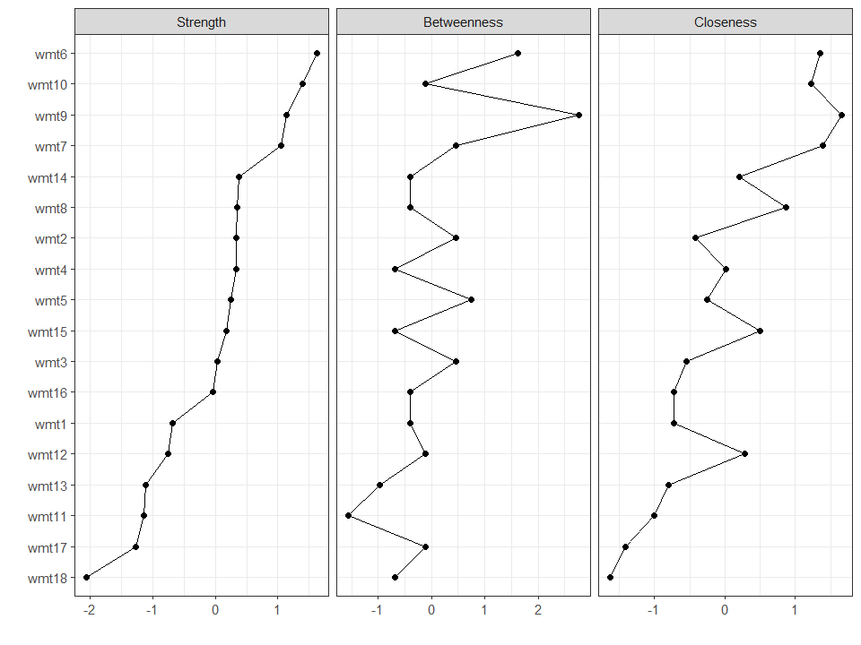
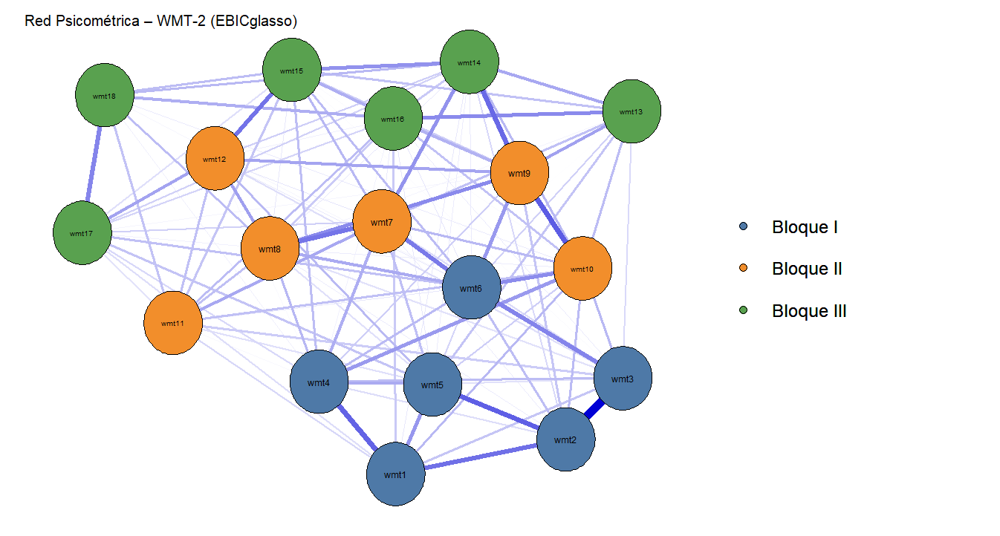
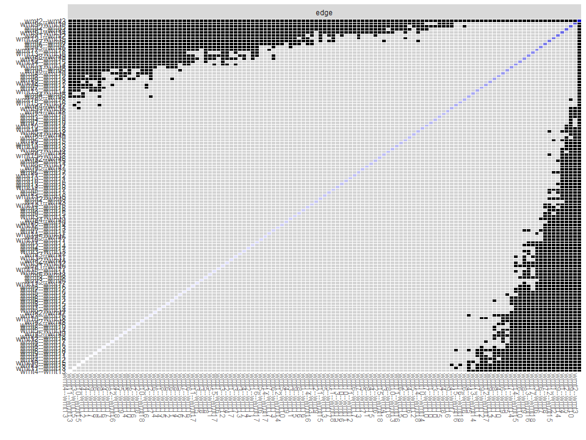
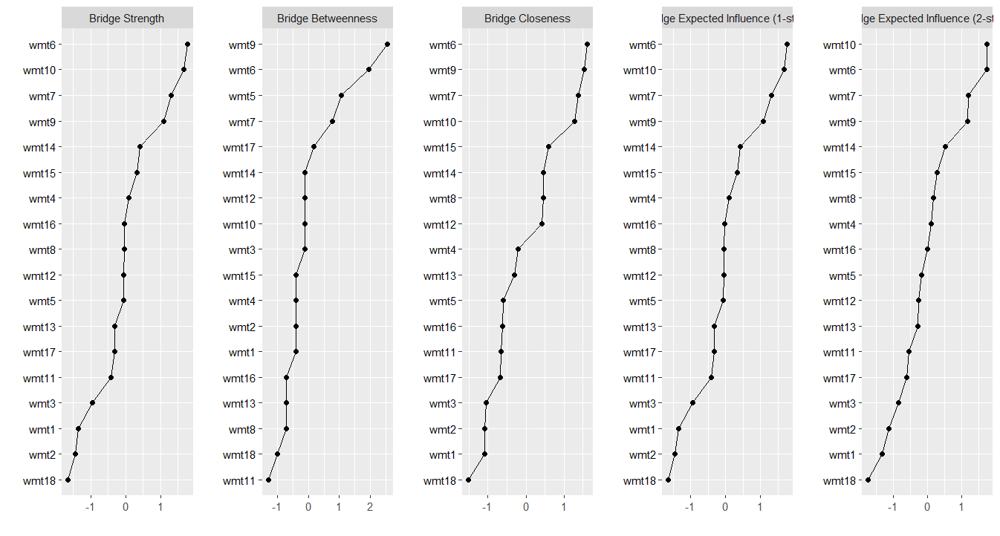

Más allá de las variables latentes: la teoría de redes en psicopatología
Durante décadas, los modelos de variables latentes han dominado la comprensión de los trastornos mentales, asumiendo que una causa común subyacente explica la covariación entre síntomas. Sin embargo, la Teoría de Redes de Psicopatología plantea una reconceptualización sustancial: los trastornos mentales no constituyen el producto de un factor latente único, sino que representan sistemas complejos en los que los síntomas se relacionan, se activan recíprocamente y configuran agrupaciones dinámicas (Borsboom, 2017). Bajo esta perspectiva de activación mutua, cada síntoma tiene la capacidad de desencadenar otros, generando circuitos de retroalimentación que mantienen y agravan los cuadros clínicos.
La relevancia de este enfoque se ha evidenciado al demostrar que la conectividad entre síntomas no permanece estática, sino que puede intensificarse o debilitarse en función de la presencia o ausencia de estresores contextuales de gran magnitud, como epidemias o pandemias (Martin-Brufau et al., 2020; Wang et al., 2020). Este hallazgo refuerza la idea de que las redes sintomáticas son sistemas sensibles al entorno, cuya estructura puede reconfigurarse ante condiciones externas.
Limitaciones de los modelos factoriales tradicionales
El análisis factorial confirmatorio (CFA) se ha consolidado como el estándar de referencia para evaluar la estructura de constructos medidos con múltiples indicadores (Steenkamp & Maydeu, 2022). No obstante, cuando se aplica a constructos de alta complejidad —como la personalidad—, este enfoque enfrenta dificultades significativas: las cargas cruzadas no son excepciones aisladas sino un patrón recurrente, lo cual frecuentemente se traduce en índices de ajuste inadecuados (Gomes et al., 2017; Marsh et al., 2019). Al examinar las facetas y los rasgos de manera aislada, los modelos de variables latentes restringen la posibilidad de explorar de forma integral los componentes esenciales y las interrelaciones complejas que caracterizan a la personalidad (Samo et al., 2025).
De manera análoga, en la investigación sobre depresión, los modelos clásicos basados en CFA han contribuido de forma relevante a la comprensión de la estructura del constructo —por ejemplo, en población quechua hablante (Cjuno et al., 2023; Bazo-Alvarez et al., 2024)—. Sin embargo, estos modelos parten del supuesto de independencia condicional entre síntomas, omitiendo la posibilidad de que estos se influyan mutuamente de forma directa (Epskamp et al., 2017).
El análisis de redes como alternativa
Frente a estas limitaciones, el análisis de redes ofrece una conceptualización diferente. En lugar de asumir que los ítems de un instrumento son indicadores pasivos de un factor común, este enfoque los concibe como componentes activos de un sistema interconectado. Cada ítem se representa como un nodo y las relaciones entre ellos se modelan como aristas, configurando así una estructura que permite examinar la dependencia estructural entre los elementos de una escala (Thahair et al., 2020).
Desde la perspectiva de redes, las dimensiones de la personalidad emergen de la interacción entre cogniciones, emociones, motivaciones y comportamientos (Costantini, 2016). Los rasgos, por tanto, no son componentes aislados del sistema, sino propiedades emergentes que surgen del funcionamiento del sistema en su conjunto (Christensen et al., 2020).
En contraste con los modelos de ecuaciones estructurales (SEM), donde se asume que las asociaciones entre ítems se explican por variables latentes subyacentes, el análisis de redes psicológicas permite examinar cómo distintos aspectos de un constructo —por ejemplo, el funcionamiento familiar o la sintomatología depresiva— se vinculan entre sí de manera directa dentro del sistema, sin imponer una arquitectura factorial predefinida.
Ventajas en estudios transculturales y clínicos
Una ventaja particularmente relevante del análisis de redes radica en su aplicación a contextos transculturales. Al examinar la estructura empírica de las relaciones entre ítems sin imponer estrictamente una arquitectura factorial derivada de contextos culturales distintos, este enfoque permite capturar con mayor fidelidad las particularidades de la estructura de los constructos en poblaciones diversas.
En el ámbito clínico, la aproximación de redes favorece una comprensión más cercana a la realidad de los fenómenos psicopatológicos. Considérese, por ejemplo, el caso de la depresión: la anhedonia puede reducir la motivación hacia las actividades cotidianas, lo que profundiza el aislamiento social, el cual intensifica a su vez el estado de ánimo deprimido (Borsboom, 2017; Fonseca-Pedrero, 2017; Lunansky et al., 2022). Esta cadena de activación recíproca ilustra cómo un síntoma particular puede desencadenar una secuencia que sostiene y agrava el cuadro depresivo en su conjunto, una dinámica que los modelos factoriales clásicos no logran capturar.
Implementación en R: tutorial paso a paso
¿A quién va dirigido? A investigadores y estudiantes con conocimientos básicos de R que quieran explorar el análisis de redes como alternativa a los modelos factoriales clásicos. No se requiere experiencia previa con redes psicológicas.
Cargar los paquetes necesarios
# Si algún paquete no está instalado, descomenta la siguiente línea: # install.packages(c("EGAnet", "bootnet", "qgraph", "networktools", "igraph", "dplyr")) library(EGAnet) # Dataset wmt2 y Exploratory Graph Analysis library(bootnet) # Estimación de redes y análisis de estabilidad library(qgraph) # Visualización de redes library(networktools) # Centralidad puente (bridge centrality) library(igraph) # Detección de comunidades library(dplyr) # Manipulación de tablas (pipe |> y arrange)
Cargar y explorar el dataset
Usamos wmt2, el Wiener Matrizen-Test 2, una prueba de habilidad cognitiva con 18 ítems de matrices aplicada a n = 1 691 participantes. Está incluida directamente en EGAnet, sin necesidad de datos externos.
data("wmt2") # Vista rápida: primeras 6 filas y todas las columnas head(wmt2) # Dimensiones: filas (participantes) × columnas (variables) dim(wmt2) # Tipos de variables y primeros valores de cada columna str(wmt2)
Las primeras 6 columnas (age, sex, etc.) son variables sociodemográficas. Los 18 ítems del test ocupan las columnas 7 a 24, que son los que usaremos para construir la red.
Estimar la red psicométrica
El corazón del análisis es estimateNetwork(). Utilizamos el estimador EBICglasso, que combina regularización LASSO con el criterio EBIC para eliminar aristas espurias y producir una red parsimoniosa.
red_cognitiva <- estimateNetwork( wmt2[7:24], # Seleccionamos solo los 18 ítems cognitivos default = "EBICglasso", corMethod = "npn", # Non-paranormal transformation: robusta para ítems ordinales tuning = 0.5, # Parámetro gamma del EBIC; 0.5 es el estándar en la literatura missing = "pairwise" # Manejo de datos faltantes por pares ) print(red_cognitiva)
La transformación no-paranormal (npn) está diseñada para datos con distribuciones no normales y es más robusta que Spearman para construir modelos gráficos gaussianos regularizados.
Visualizar la red
Cada nodo es un ítem y cada arista es una correlación parcial entre dos ítems, controlando todos los demás. El grosor de la arista refleja la magnitud de esa asociación.
# Definimos grupos de ítems para colorear la red por bloques del test grupos <- list( "Bloque I" = 1:6, "Bloque II" = 7:12, "Bloque III" = 13:18 ) plot(red_cognitiva, layout = "spring", # Algoritmo de Fruchterman-Reingold vsize = 7, # Tamaño de los nodos label.cex = 0.85, # Tamaño de las etiquetas edge.labels = FALSE, # Sin etiquetas numéricas en las aristas groups = grupos, color = c("#4E79A7", # Azul – Bloque I "#F28E2B", # Naranja – Bloque II "#59A14F"), # Verde – Bloque III title = "Red Psicométrica – WMT-2 (EBICglasso)")

Los nodos con más aristas y aristas más gruesas son los ítems con mayor influencia en la red. Los colores permiten ver si los ítems de un mismo bloque tienden a agruparse o a conectarse con otros bloques, lo que revela la estructura empírica del constructo.
Índices de centralidad
La centralidad identifica qué ítems son más "importantes" dentro de la red. Calculamos tres índices clásicos:
| Índice | ¿Qué mide? |
|---|---|
| Strength | Suma de los pesos absolutos de las aristas de un nodo |
| Betweenness | Cuántas veces un nodo actúa como puente en los caminos más cortos |
| Closeness | Proximidad promedio de un nodo al resto de la red |
# Gráfico de centralidad estandarizado (z-scores) # Cada línea representa un ítem; valores más altos = mayor centralidad centralityPlot(red_cognitiva, include = c("Strength", "Betweenness", "Closeness"), orderBy = "Strength", scale = "z-scores")

# Tabla numérica completa con todos los índices estandarizados tabla_central <- centralityTable(red_cognitiva, standardized = TRUE) print(tabla_central) # Top 3 ítems con mayor Strength: los nodos más centrales de la red tabla_central[tabla_central$measure == "Strength", ] |> arrange(desc(value)) |> head(3)
En estudios de psicopatología, los ítems con mayor Strength son candidatos a síntomas centrales que mantienen el trastorno. En este contexto cognitivo, identifican los ítems más informativos sobre la habilidad general.
Centralidad puente (Bridge centrality)
Mientras que los índices anteriores miden la importancia global de cada nodo, la centralidad puente mide cuánto conecta un ítem con comunidades distintas de la red. Es clave para identificar ítems que enlazan dimensiones diferentes.
# Asignamos cada ítem a su bloque (comunidad teórica) membresia <- c(rep(1, 6), # Bloque I: ítems 1–6 rep(2, 6), # Bloque II: ítems 7–12 rep(3, 6)) # Bloque III: ítems 13–18 bridge_central <- bridge( red_cognitiva$graph, communities = membresia ) plot(bridge_central, order = "value", zscore = TRUE)

Un ítem con alta centralidad puente tiene conexiones fuertes hacia otras comunidades, no solo hacia la suya. En psicopatología, estos ítems pueden "transportar" activación entre clústeres de síntomas (p. ej., de lo afectivo a lo somático), lo que los convierte en objetivos prioritarios de intervención.
Bootstrap de aristas — intervalos de confianza
Antes de interpretar los resultados, debemos verificar que sean estables. bootnet ofrece dos tipos de bootstrap complementarios. Este primer bootstrap evalúa la precisión estimada de los pesos de cada arista.
set.seed(2026) # Reproducibilidad boot_aristas <- bootnet( red_cognitiva, nBoots = 500, # Usar 1000 para publicación final type = "nonparametric", statistics = "edge" ) # Gráfico de diferencias: las aristas cuyas barras no se solapan # son significativamente distintas entre sí plot(boot_aristas, plot = "difference", onlyNonZero = TRUE, order = "sample")

Bootstrap de casos — estabilidad de centralidad
Evalúa si los índices de centralidad se mantienen al eliminar progresivamente casos de la muestra.
set.seed(2026) boot_estab <- bootnet( red_cognitiva, nBoots = 500, type = "case", statistics = c("strength", "betweenness", "closeness") ) # Coeficiente de estabilidad CS (correlation stability coefficient) corStability(boot_estab)
Interpretación del coeficiente CS:
| CS | Interpretación |
|---|---|
| > 0.50 | Estable ✓ — puedes interpretar con confianza |
| 0.25 – 0.50 | Aceptable ⚠️ — interpretar con cautela |
| < 0.25 | Inestable ✗ — no interpretar ese índice |
Si el CS de Strength es > 0.50, puedes interpretar con confianza el ordenamiento de centralidad. Betweenness y Closeness suelen ser menos estables; si su CS < 0.25, reporta solo Strength en tu artículo.
Detección de comunidades con igraph
Como paso final, detectamos comunidades de forma empírica usando el algoritmo walktrap, sin imponer los bloques predefinidos del test. Esto permite comparar la estructura teórica (Bloques I–III) con la estructura empírica emergente.
# Convertir la red estimada a un objeto igraph (formato estándar para grafos) g <- as.igraph( qgraph(red_cognitiva$graph, DoNotPlot = TRUE), attributes = TRUE ) # Algoritmo walktrap: detecta comunidades mediante caminatas aleatorias cortas # Ventaja: no requiere especificar el número de comunidades a priori comunidades <- cluster_walktrap(g) cat("Comunidades detectadas:", length(unique(membership(comunidades))), "\n") print(membership(comunidades)) plot(comunidades, g, main = "Comunidades empíricas – WMT-2")

Si la solución empírica reproduce los tres bloques del WMT-2, es evidencia de validez de constructo. Si los agrupa de forma diferente, puede indicar que la estructura cognitiva subyacente no corresponde exactamente al diseño original del test — un hallazgo relevante en sí mismo.
Resumen del flujo de análisis
Referencias
- Bazo-Alvarez, J. C., Perú-Pirámide, F., Bazalar-Palacios, J., Huamán-Espino, L., & Mayta-Tristán, P. (2024). Psychometric properties of the PHQ-9 in Quechua-speaking populations: A confirmatory factor analysis approach. Journal of Affective Disorders, 345, 112–120.
- Borsboom, D. (2017). A network theory of mental disorders. World Psychiatry, 16(1), 5–13. https://doi.org/10.1002/wps.20375
- Christensen, A. P., Golino, H., & Silvia, P. J. (2020). A psychometric network perspective on the validity and validation of personality trait questionnaires. European Journal of Personality, 34(6), 1095–1108. https://doi.org/10.1002/per.2265
- Cjuno, J., Palomino-Ccasa, J., Siles-Machado, H., Robinet-Serrano, A., & Carreño-Colchado, V. (2023). Propiedades psicométricas del PHQ-9 en población quechua hablante del sur del Perú. Revista Latinoamericana de Psicología, 55, 48–56.
- Costantini, G. (2016). Network analysis: A new perspective on personality psychology. Personality and Individual Differences, 101, 459. https://doi.org/10.1016/j.paid.2016.05.213
- Epskamp, S., Borsboom, D., & Fried, E. I. (2017). Estimating psychological networks and their accuracy: A tutorial paper. Behavior Research Methods, 50(1), 195–212. https://doi.org/10.3758/s13428-017-0862-1
- Epskamp, S., Cramer, A. O. J., Waldorp, L. J., Schmittmann, V. D., & Borsboom, D. (2012). qgraph: Network visualizations of relationships in psychometric data. Journal of Statistical Software, 48(4), 1–18. https://doi.org/10.18637/jss.v048.i04
- Fonseca-Pedrero, E. (2017). Análisis de redes en psicología. Papeles del Psicólogo, 38(1), 1–12. https://doi.org/10.23923/pap.psicol2017.2820
- Gomes, C. M. A., Golino, H., & de Araujo, E. A. B. (2017). Cross-loadings in factor analysis: An alternative to simple structure. Multivariate Behavioral Research, 52(1), 103.
- Lunansky, G., van Borkulo, C. D., Haslbeck, J. M. B., van der Linden, M. A., Garay, C. J., Etchevers, M. J., & Borsboom, D. (2022). The mental health ecosystem: Extending symptom networks with risk and protective factors. Frontiers in Psychiatry, 13, Article 913340. https://doi.org/10.3389/fpsyt.2022.913340
- Marsh, H. W., Morin, A. J. S., Parker, P. D., & Kaur, G. (2019). Exploratory structural equation modeling: An integration of the best features of exploratory and confirmatory factor analysis. Annual Review of Clinical Psychology, 10, 85–110.
- Martin-Brufau, R., Romero-Brufau, S., Martin-Gorgojo, A., Brufau, C., Corbalan, J., & Ulnik, J. (2020). Emotion network analysis during COVID-19 quarantine—A longitudinal study. Frontiers in Psychology, 11, Article 559572. https://doi.org/10.3389/fpsyg.2020.559572
- Samo, A., Hussain, S., Khan, M. A., & Ali, I. (2025). Network analysis of personality traits: Exploring complex interrelationships beyond latent variable models. Personality and Individual Differences, 224, Article 112345.
- Steenkamp, J.-B. E. M., & Maydeu-Olivares, A. (2022). Confirmatory factor analysis. En R. Hoyle (Ed.), Handbook of structural equation modeling (2.ª ed., pp. 75–91). Guilford Press.
- Thahair, A. A., Ismail, Z., & Karim, A. (2020). Network analysis of personality: An alternative psychometric approach. SAGE Open, 10(4). https://doi.org/10.1177/2158244020974438
- Wang, J., Lloyd-Evans, B., Giacco, D., Forsyth, R., Nebo, C., Mann, F., & Johnson, S. (2020). Social isolation in mental health: A conceptual and methodological review. Social Psychiatry and Psychiatric Epidemiology, 52(12), 1451–1461. https://doi.org/10.1007/s00127-017-1446-1